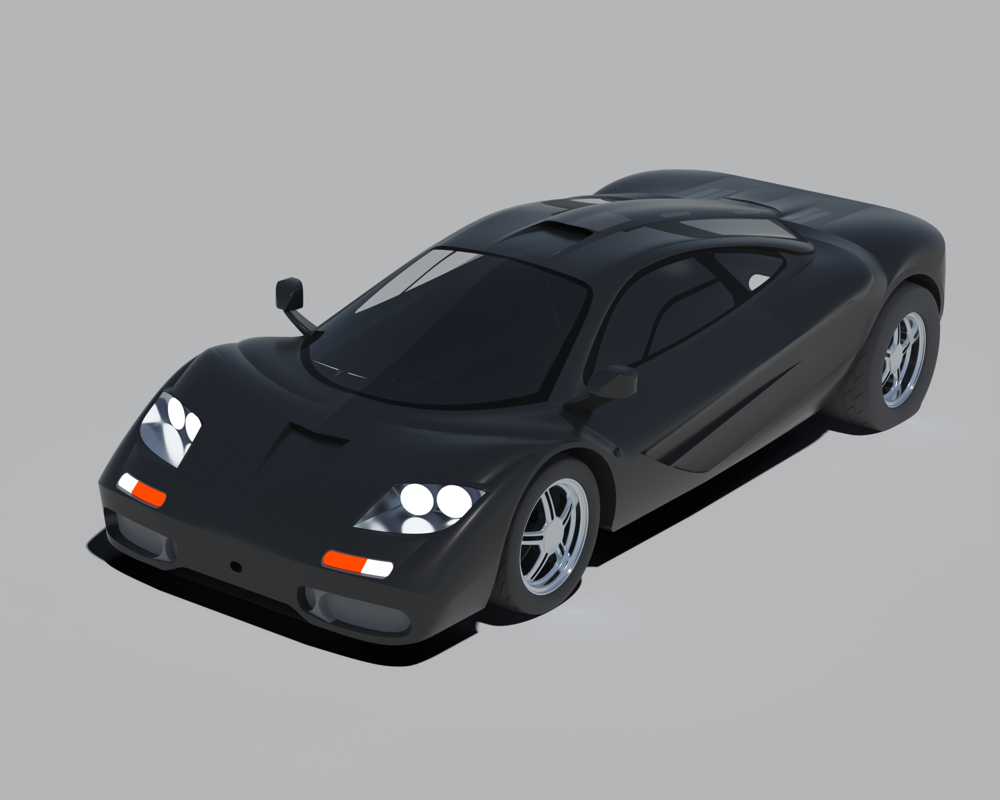

1. Abstract
Due to major competition in the automotive industries these days, everyone is looking for the best car to manufacture, sell, and buy. To achieve this task, companies and customers actively seek the full car specifications of their product and competitors for comparison. Many automotive companies only give general specifications like maximum speed, dimensions, and general suspension/steering outlines. As an engineer, we need to investigate the full specifications of a vehicle to a point where we can reverse engineer the car. This paper presents an analytical study of the suspension layout and steering kinematics of the legendary McLaren F1 road car.
2. Introduction and Vehicle Background
The McLaren F1, powered by the BMW S70/2 6.1-litre V12 engine, set a long-standing record of about 240 mph (rev-limited); 243 mph record run in 1998, remaining the fastest naturally aspirated production car ever built. Its chassis is a carbon fibre reinforced composite monocoque, setting an early precedent for carbon fibre composites in production vehicles. Its suspension configuration uses double wishbones both front and rear, utilizing a unique Ground Plane Shear Centre subframe mount at the front and an Inclined Axis Shear mounting at the rear, combined with toe control links to manage dynamic deflection steer.
3. Vehicle Dynamic Load Calculations
Calculations were performed to estimate static and dynamic wheel loads under various operating conditions. Kerb weight: 1,140 kg (42% front / 58% rear weight distribution), wheelbase: 2,718 mm, front/rear track: 1,568 / 1,472 mm, centre of gravity height: 347 mm (derived), and aerodynamic drag: 340 N at 112 km/h (70 mph). Static wheel loads:
- Static Front Load: 2,318 N per wheel
- Static Rear Load: 3,274 N per wheel
Under acceleration at 7 m/s² (tractive effort 12,563 N, based on 651 Nm engine torque, 3.23 gearbox ratio, 2.37 differential ratio, 0.9 efficiency, 357 mm rear tyre radius):
- Accelerating Front Wheel Load: 1,808.75 N per wheel
- Accelerating Rear Wheel Load: 3,782.95 N per wheel
Under braking deceleration at 9.8 m/s²:
- Braking Front Wheel Load: 3,031.30 N per wheel
- Braking Rear Wheel Load: 2,560.40 N per wheel
4. Steering Geometry and Kinematics
The McLaren F1 features an unassisted rack-and-pinion steering system. Using turning parameters and track width (Front: 1,568 mm, Rear: 1,472 mm, Wheelbase: 2,718 mm), the steering angles for a 13-meter turning circle diameter were calculated:
- Outer Wheel Angle: 24.78°
- Inner Wheel Angle: 31.43°
- Toe Difference: 6.65°
This positive Ackermann toe difference ensures slip angles are minimized during low-speed cornering, reducing tire scrub and steering effort.
5. Tyre Scrub Torque
Evaluating tyre scrub torque under static and braking conditions:
- Static Front Scrub Torque: 48,546 N-mm
- Static Rear Scrub Torque: 70,727 N-mm
- Braking Front Scrub Torque: 62,646 N-mm
- Braking Rear Scrub Torque: 55,840 N-mm
6. Conclusion
These results rely on assumed values (tyre pressures, unsprung mass, spring geometry, drag application height) because full suspension and steering data is not public. More geometric and experimental data would improve accuracy.
| Specification | F1 Road Car | F1 GTR Race Car (1997) | F1 LM Road Car |
|---|---|---|---|
| Production Year | 1993 - 1998 | 1997 | 1996 |
| Examples Built | 64 | 10 | 5 |
| Engine | BMW 6,064 cc V12 (S70/2 Naturally Aspirated) | BMW 5,990 cc V12 (Air-restricted) | BMW 6,064 cc V12 (Unrestricted) |
| Cubic Capacity | 6,064 cc | 5,990 cc | 6,064 cc |
| Power Output | 627 bhp @ 7400 rpm | 600 bhp @ 7500 rpm | 680 bhp @ 7800 rpm |
| Transmission | Transverse 6-speed, LSD | Magnesium case transverse 6-speed | Transverse 6-speed Racing Unit, LSD |
| Front Suspension | Double wishbones, Ground Plane Shear Centre subframe, light alloy damper, coaxial coil spring, anti-roll bar | ||
| Rear Suspension | Double wishbones, Inclined Axis Shear mounting, light alloy damper, coaxial coil spring, toe control links | ||
| Brakes F/R | Outboard 13/12 in ventilated discs | Outboard 15/14 in ventilated carbon discs | Outboard 13/12 in ventilated discs |
| Weight | 1,140 kg (2502 lb) | 915 kg (2017 lb) | 1,062 kg (2341 lb) |
| Wheelbase | 2,718 mm | 2,723 mm | 2,718 mm |
| Track F/R | 1,568 / 1,472 mm | 1,617 / 1,582 mm | 1,570 / 1,464 mm |
Specification data: F1roadcar.com (independent enthusiast site), 'The McLaren F1 Road Car: Specifications', https://f1roadcar.com, accessed March 2020 and June 2026. Not affiliated with McLaren.

Personal project (unofficial): SolidWorks surface model of the McLaren F1, built from front, top, rear and side-profile reference views of the 1993 road car.
McLaren is a trademark of McLaren Automotive. This is an unofficial personal project, not affiliated with or endorsed by McLaren.
MSc coursework: Analytical study of McLaren F1 suspension and steering
Detailed analytical engineering investigation of the McLaren F1. Analyzed tire scrub, Ackermann geometry, suspension subframe kinematics, and dynamic load transfer under acceleration and braking.
.png)
.png)
.png)
.png)
Suzuki Samurai Transfer Case Gear Set Reverse Engineering
High-fidelity reverse engineering of the Suzuki Samurai 4WD transfer case gear set. Recreated complete gear geometries, shaft splines, and casing interfaces based on physical teardown measurements, optimizing tooth contact and load distribution.
Suzuki Baleno Exhaust Manifold Design
Engineered a high-performance 4-1 exhaust manifold header for the Suzuki Baleno. Designed equal-length primary runners to optimize exhaust gas scavenging and volumetric efficiency, validating clearance constraints within the engine bay packaging envelope.
KTM 390 Fork Extenders
Designed custom bolt-on fork extenders for the KTM 390 to raise front-end ground clearance. Performed static FEA on the threaded joints and load-bearing areas.
Tire Table Design
Designed an aesthetic and functional table base utilizing a real automotive performance tire. Engineered a custom steel interlocking support bracket assembly in SolidWorks to secure the tempered glass top while distributing load evenly across the contact points.
Tea Machine Pulley Design & Drawing
Detailed engineering drawing and tolerance study of a drive pulley assembly for an automated industrial tea brewing machine. Implemented precise bore tolerances, keyway fits, and surface finish callouts complying with ISO engineering drafting standards.